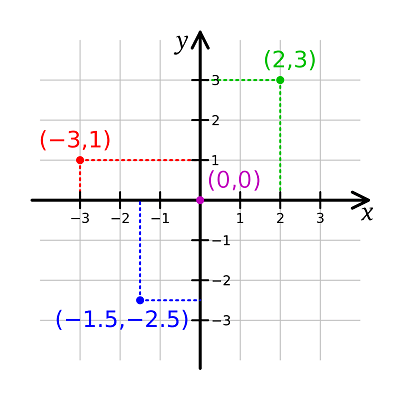

17.12 — Tableaux multidimensionnels de style C
Prenons un jeu comme le Tic-tac-toe. Le plateau standard de ce jeu est une grille de 3×3 cases, sur laquelle les joueurs placent à tour de rôle les symboles « X » et « O ». Le premier à aligner trois symboles gagne la partie.
Bien que vous puissiez stocker les données du plateau dans 9 variables individuelles, nous savons que lorsque vous avez plusieurs instances d'un même élément, il vaut mieux utiliser un tableau :
int ttt[9]; // un tableau de style C d'int (valeur 0 = case vide, 1 = joueur 1, 2 = joueur 2)
Cette définition crée un tableau de style C de 9 éléments disposés séquentiellement en mémoire. On peut imaginer ces éléments alignés sur une seule ligne de valeurs, comme ceci :
// ttt[0] ttt[1] ttt[2] ttt[3] ttt[4] ttt[5] ttt[6] ttt[7] ttt[8]
La dimension d'un tableau est le nombre d'indices nécessaires pour sélectionner un élément. Un tableau ne contenant qu'une seule dimension est appelé tableau à une dimension (ou tableau 1d). ttt ci-dessus est un exemple de tableau à une dimension, car ses éléments peuvent être sélectionnés avec un seul indice (par exemple ttt[2]).
Mais remarquez que notre tableau à une dimension ne ressemble pas beaucoup à notre plateau de tic-tac-toe, qui existe en deux dimensions. Nous pouvons faire mieux.
Tableaux à deux dimensions
Dans les leçons précédentes, nous avons indiqué que les éléments d'un tableau peuvent être de n'importe quel type objet. Cela signifie que le type des éléments d'un tableau peut lui-même être un tableau ! La définition d'un tel tableau est simple :
int a[3][5]; // un tableau de 3 éléments, chacun étant un tableau de 5 int
Un tableau de tableaux est appelé tableau à deux dimensions (ou tableau 2d) car il possède deux indices.
Avec un tableau à deux dimensions, il est pratique de considérer le premier indice (à gauche) comme sélectionnant la ligne, et le second indice (à droite) comme sélectionnant la colonne. Conceptuellement, on peut imaginer ce tableau à deux dimensions disposé ainsi :
// col 0 col 1 col 2 col 3 col 4
// a[0][0] a[0][1] a[0][2] a[0][3] a[0][4] ligne 0
// a[1][0] a[1][1] a[1][2] a[1][3] a[1][4] ligne 1
// a[2][0] a[2][1] a[2][2] a[2][3] a[2][4] ligne 2
Pour accéder aux éléments d'un tableau à deux dimensions, il suffit d'utiliser deux indices :
a[2][3] = 7; // a[ligne][colonne], où ligne = 2 et colonne = 3
Ainsi, pour un plateau de tic-tac-toe, nous pouvons définir un tableau 2d de cette façon :
int ttt[3][3];
Nous disposons maintenant d'une grille de 3×3 éléments que nous pouvons facilement manipuler à l'aide d'indices de ligne et de colonne !
Tableaux multidimensionnels
Les tableaux comportant plus d'une dimension sont appelés tableaux multidimensionnels.
C++ prend même en charge les tableaux multidimensionnels à plus de 2 dimensions :
int threedee[4][4][4]; // un tableau 4x4x4 (un tableau de 4 tableaux de 4 tableaux de 4 int)
Par exemple, le terrain de Minecraft est divisé en blocs de 16x16x16 (appelés sections de chunk).
Les tableaux de dimensions supérieures à 3 sont pris en charge, mais restent rares.
Disposition des tableaux 2d en mémoire
La mémoire est linéaire (à une dimension), donc les tableaux multidimensionnels sont en réalité stockés sous la forme d'une liste séquentielle d'éléments.
Il existe deux façons possibles de stocker en mémoire le tableau suivant :
// col 0 col 1 col 2 col 3 col 4
// [0][0] [0][1] [0][2] [0][3] [0][4] ligne 0
// [1][0] [1][1] [1][2] [1][3] [1][4] ligne 1
// [2][0] [2][1] [2][2] [2][3] [2][4] ligne 2
C++ utilise l'ordre par lignes (row-major order), où les éléments sont placés séquentiellement en mémoire ligne par ligne, de gauche à droite, puis de haut en bas :
[0][0] [0][1] [0][2] [0][3] [0][4] [1][0] [1][1] [1][2] [1][3] [1][4] [2][0] [2][1] [2][2] [2][3] [2][4]
D'autres langages (comme Fortran) utilisent l'ordre par colonnes (column-major order) : les éléments sont placés séquentiellement en mémoire colonne par colonne, de haut en bas, puis de gauche à droite :
[0][0] [1][0] [2][0] [0][1] [1][1] [2][1] [0][2] [1][2] [2][2] [0][3] [1][3] [2][3] [0][4] [1][4] [2][4]
En C++, lors de l'initialisation d'un tableau, les éléments sont initialisés dans l'ordre par lignes. Et lors du parcours d'un tableau, il est plus efficace d'accéder aux éléments dans l'ordre où ils sont disposés en mémoire.
Initialisation des tableaux à deux dimensions
Pour initialiser un tableau à deux dimensions, le plus simple consiste à utiliser des accolades imbriquées, chaque ensemble de nombres représentant une ligne :
int array[3][5]
{
{ 1, 2, 3, 4, 5 }, // ligne 0
{ 6, 7, 8, 9, 10 }, // ligne 1
{ 11, 12, 13, 14, 15 } // ligne 2
};
Bien que certains compilateurs vous permettent d'omettre les accolades internes, nous vous recommandons fortement de les inclure malgré tout, pour des raisons de lisibilité.
Lorsque vous utilisez des accolades internes, les initialiseurs manquants sont initialisés par valeur :
int array[3][5]
{
{ 1, 2 }, // ligne 0 = 1, 2, 0, 0, 0
{ 6, 7, 8 }, // ligne 1 = 6, 7, 8, 0, 0
{ 11, 12, 13, 14 } // ligne 2 = 11, 12, 13, 14, 0
};
Un tableau multidimensionnel initialisé peut omettre (uniquement) la dimension la plus à gauche :
int array[][5]
{
{ 1, 2, 3, 4, 5 },
{ 6, 7, 8, 9, 10 },
{ 11, 12, 13, 14, 15 }
};
Dans ce cas, le compilateur peut calculer lui-même la dimension la plus à gauche à partir du nombre d'initialiseurs.
Omettre des dimensions autres que la plus à gauche n'est pas autorisé :
int array[][]
{
{ 1, 2, 3, 4 },
{ 5, 6, 7, 8 }
};
Comme pour les tableaux ordinaires, les tableaux multidimensionnels peuvent toujours être initialisés à 0 de la manière suivante :
int array[3][5] {};
Tableaux à deux dimensions et boucles
Avec un tableau à une dimension, nous pouvons utiliser une seule boucle pour parcourir tous les éléments du tableau :
#include <iostream>
int main()
{
int arr[] { 1, 2, 3, 4, 5 };
// boucle for avec indice
for (std::size_t i{0}; i < std::size(arr); ++i)
std::cout << arr[i] << ' ';
std::cout << '\n';
// boucle for basée sur un intervalle
for (auto e: arr)
std::cout << e << ' ';
std::cout << '\n';
return 0;
}
Avec un tableau à deux dimensions, nous avons besoin de deux boucles : une pour sélectionner la ligne, et une autre pour sélectionner la colonne.
Et avec deux boucles, nous devons aussi déterminer laquelle sera la boucle externe et laquelle sera la boucle interne. Il est plus efficace d'accéder aux éléments dans l'ordre où ils sont disposés en mémoire. Comme C++ utilise l'ordre par lignes, le sélecteur de ligne doit être la boucle externe, et le sélecteur de colonne la boucle interne.
#include <iostream>
int main()
{
int arr[3][4] {
{ 1, 2, 3, 4 },
{ 5, 6, 7, 8 },
{ 9, 10, 11, 12 }};
// double boucle for avec indices
for (std::size_t row{0}; row < std::size(arr); ++row) // std::size(arr) renvoie le nombre de lignes
{
for (std::size_t col{0}; col < std::size(arr[0]); ++col) // std::size(arr[0]) renvoie le nombre de colonnes
std::cout << arr[row][col] << ' ';
std::cout << '\n';
}
// double boucle for basée sur un intervalle
for (const auto& arow: arr) // récupère chaque ligne du tableau
{
for (const auto& e: arow) // récupère chaque élément de la ligne
std::cout << e << ' ';
std::cout << '\n';
}
return 0;
}
Exemple de tableau à deux dimensions
Examinons un exemple pratique de tableau à deux dimensions :
#include <iostream>
int main()
{
constexpr int numRows{ 10 };
constexpr int numCols{ 10 };
// Déclare un tableau de 10x10
int product[numRows][numCols]{};
// Calcule une table de multiplication
// Inutile de calculer la ligne et la colonne 0, car une multiplication par 0 donne toujours 0
for (std::size_t row{ 1 }; row < numRows; ++row)
{
for (std::size_t col{ 1 }; col < numCols; ++col)
{
product[row][col] = static_cast<int>(row * col);
}
}
for (std::size_t row{ 1 }; row < numRows; ++row)
{
for (std::size_t col{ 1 }; col < numCols; ++col)
{
std::cout << product[row][col] << '\t';
}
std::cout << '\n';
}
return 0;
}
Ce programme calcule et affiche une table de multiplication pour toutes les valeurs comprises entre 1 et 9 (inclus). Remarquez que, lors de l'affichage de la table, les boucles for commencent à 1 au lieu de 0. Cela permet d'omettre l'affichage de la colonne 0 et de la ligne 0, qui ne contiendraient que des 0 ! Voici la sortie :
1 2 3 4 5 6 7 8 9
2 4 6 8 10 12 14 16 18
3 6 9 12 15 18 21 24 27
4 8 12 16 20 24 28 32 36
5 10 15 20 25 30 35 40 45
6 12 18 24 30 36 42 48 54
7 14 21 28 35 42 49 56 63
8 16 24 32 40 48 56 64 72
9 18 27 36 45 54 63 72 81
Coordonnées cartésiennes et indices de tableau
En géométrie, le système de coordonnées cartésiennes est souvent utilisé pour décrire la position des objets. En deux dimensions, on dispose de deux axes de coordonnées, conventionnellement nommés « x » et « y ». « x » est l'axe horizontal, et « y » l'axe vertical.

En deux dimensions, la position cartésienne d'un objet peut être décrite par une paire { x, y }, où la coordonnée x et la coordonnée y indiquent à quelle distance à droite de l'axe des x et à quelle hauteur au-dessus de l'axe des y se trouve l'objet. Parfois, l'axe des y est orienté vers le bas (de sorte que la coordonnée y indique à quelle distance sous l'axe des y se trouve quelque chose).
Examinons maintenant la disposition de notre tableau 2d en C++ :
// col 0 col 1 col 2 col 3 col 4
// [0][0] [0][1] [0][2] [0][3] [0][4] ligne 0
// [1][0] [1][1] [1][2] [1][3] [1][4] ligne 1
// [2][0] [2][1] [2][2] [2][3] [2][4] ligne 2
Il s'agit également d'un système de coordonnées à deux dimensions, où la position d'un élément peut être décrite par [ligne][colonne] (où l'axe des colonnes est orienté vers le bas).
Bien que chacun de ces systèmes de coordonnées soit assez facile à comprendre isolément, la conversion d'une coordonnée cartésienne { x, y } en indices de tableau [ligne][colonne] est un peu contre-intuitive.
L'idée clé est que la coordonnée x d'un système cartésien décrit quelle colonne est sélectionnée dans le système d'indexation du tableau. Inversement, la coordonnée y décrit quelle ligne est sélectionnée. Par conséquent, une coordonnée cartésienne { x, y } correspond à une coordonnée de tableau [y][x], ce qui est à l'envers de ce que l'on pourrait attendre !
Cela conduit à des boucles 2d qui ressemblent à ceci :
for (std::size_t y{0}; y < std::size(arr); ++y) // la boucle externe parcourt les lignes / y
{
for (std::size_t x{0}; x < std::size(arr[0]); ++x) // la boucle interne parcourt les colonnes / x
std::cout << arr[y][x] << ' '; // indexation d'abord avec y (ligne), puis x (colonne)
Remarquez que, dans ce cas, nous indexons le tableau sous la forme a[y][x], ce qui est probablement à l'envers de l'ordre alphabétique auquel vous vous attendiez.
Source originale : https://www.learncpp.com/cpp-tutorial/multidimensional-c-style-arrays/